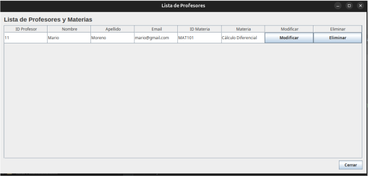

Unidad 2. Fundamentos de Programación
Bienvenido a la segunda unidad del curso, donde exploraremos la gestión avanzada de datos y los fundamentos del desarrollo de software orientado a objetos y servicios web.
Temas de la Unidad 2
Tema 2.1 Bases de datos
Introducción a los sistemas de gestión de bases de datos, cubriendo conceptos fundamentales de almacenamiento, tipos de datos y modelado relacional.
Lista de reproducción del tema Documento del temaTema 2.2. Normalización
Estudio de las reglas de normalización para optimizar estructuras de tablas, reducir la redundancia de datos y garantizar la integridad referencial.
Lista de reproducción del tema Documento del temaTema 2.3. SQL
Práctica de consultas estructuradas (SELECT, INSERT, UPDATE, DELETE)
Lista de reproducción del tema Documento del temaTema 2.4. Triggers
Implementación de disparadores automáticos en la base de datos para ejecutar acciones específicas ante eventos de inserción, actualización o borrado.
Video del tema Documento del temaTema 2.5. POO
Conceptos clave de la Programación Orientada a Objetos: clases, objetos, herencia, polimorfismo y encapsulamiento aplicado al desarrollo de software.
Video del tema Documento del temaTema 2.6. Práctica de Java & MySQL
Sesión práctica de codificación en Java, enfocada en la lógica de programación y el uso de objetos con SQL
 Lista de reproduccion del tema Documento del temaTema 2.7. API
Fundamentos de las interfaces de programación de aplicaciones, permitiendo la comunicación e integración entre diferentes sistemas y servicios.
Video del tema Documento del tema